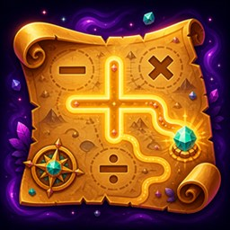
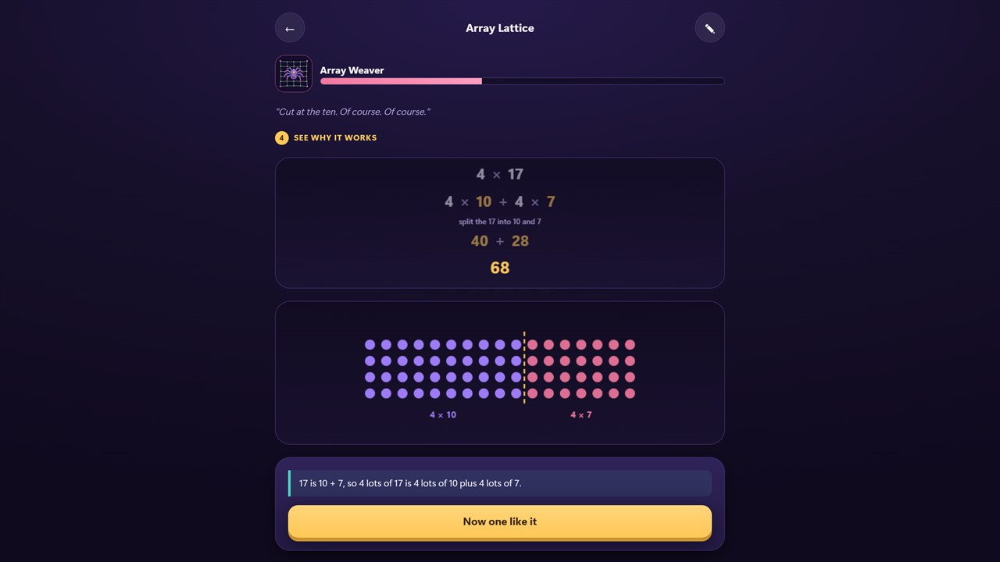

Add & subtract
Make 10, compensation, near doubles, bridging, and place-value thinking.

AddVentureby Aotearoa LabsMental maths · Ages 8–11
AddVenture teaches children the useful strategies behind mental maths—without timers, adverts, pressure, or endless guessing.

A calmer way to practise
Start with a useful piece of mental maths, not a speed test.
Spot Make 10, compensation, halve and double, or another shortcut.
A worked visual proof makes the idea concrete and memorable.
Apply the strategy to a fresh problem and add it to your collection.
What children explore
Make 10, compensation, near doubles, bridging, and place-value thinking.
Times-table patterns, doubling, halving, remainders, and divisibility rules.
Visual relationships that connect parts, decimal values, and percentages.
Area, perimeter, number patterns, and harder topics when a grown-up decides.
Made for families
The local grown-up dashboard shows which strategies a child has genuinely secured. Three difficulty levels and direct topic revision make it easy to match practice to the learner.
No analytics, advertising, account profile, or cloud progress record. AddVenture works fully offline after installation.
Read the privacy policy →Need a hand?